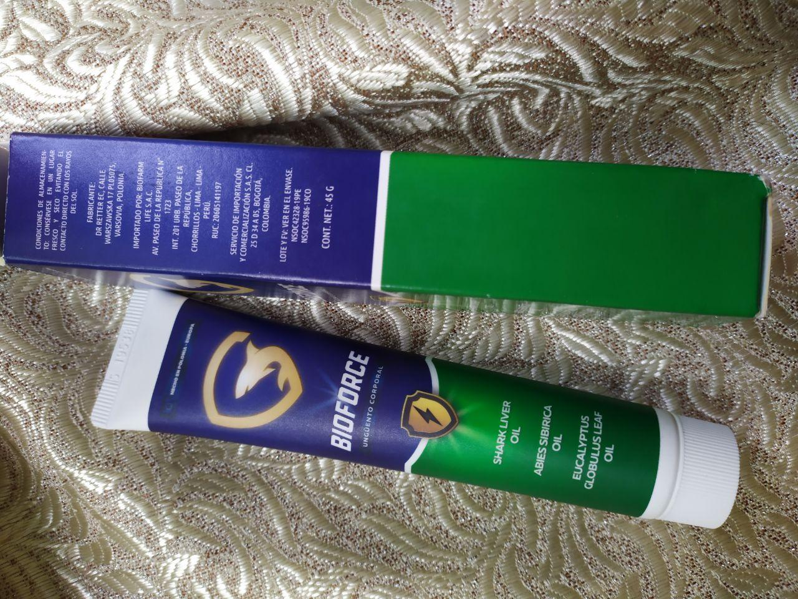

ОНЛАЙН МЕДИЦИНА
"Българските методи за лечение на стави са изненадващи." Известен германски ревматолог даде честно интервю пред български вестник.
Има само една причина за ставни заболявания, но българските лекари напълно я пренебрегват.
Д-р Карл Браун: "В България ставните заболявания все още се лекуват с остарели и неефективни лекарства, които изискват постоянна употреба през целия живот. В Германия ставите се лекуват толкова лесно, колкото и настинките."
Карл Браун дойде в България миналата година, за да проучи опита на своите български колеги. Според него това, което е видял в България , е невъзможно да се обясни. У нас, според Карл, ревматологията е в застой в средата на миналия век.
След известни речи в Германия, д-р Карл Браун се съгласи да даде интервю за българското издание. Какво не харесва известният лекар в българската медицина? И защо той твърди, че българските граждани с болки в ставите никога не могат да бъдат здрави?
- В разговор с германски журналисти казахте, че това, което видяхте в България, ви шокира. Бихте ли могли да коментирате това?
- Искам веднага да кажа, че имам добро отношение към България, българската култура и българските граждани. Но състоянието на медицината наистина шокира германските лекари. Вашето лечение се забавя с поне 20, може би 30 години. Във всеки случай, при лечение на заболявания на ставите и опорно -двигателния апарат. Можем да кажем, че такава наука като ревматология не съществува в България.
Вижте какво предлагат лекарите за лечение на стави в България: мехлеми Viprosal, Dolgit, Voltaren \ Fastum, диклофенак, Teraflex, Nurofen и други подобни лекарства.
Тези лекарства обаче НЕ лекуват стави и хрущяли, те само облекчават симптомите на заболяването - болка, възпаление, подуване. Сега си представете какво се случва на ниво организъм. Когато човек вземе хапче, използва анестезиращ гел или направи инжекция, болката се облекчава. Но веднага щом лекарството спре да действа, болката веднага се връща.
А болката е важен сигнал, тя сигнализира за патологичен процес в ставата. Само чрез заглушаване на болката, засегнатите стави са изложени на още по -разрушителни ефекти. Процесът на унищожаване се ускорява 3-5 пъти и в крайна сметка води до необратими промени, до пълно обездвижване и увреждане..
Този метод за лечение на болки в ставите не се използва в Германия повече от 20 години. Болкоуспокояващите се използват само в краен случай, много внимателно. В Германия те се продават само по рецепта и под строг контрол.
Така наречените “хондропротектори” са напълно забранени като напълно фалшиви и безполезни лекарства.
Вашите лекари и фармацевти просто вредят на хората! Ясно е, че непрекъснатото продаване на лекарство за премахване на симптомите на високи цени е много по-изгодно от излекуването на болестта веднъж завинаги, възстановяването на разпадаща се става, но това не може да се прави.
- Какво представлява съвместното лечение в Германия?
- Всички немски лекари, от професори по ревматология до обикновени терапевти и фелдшери, отдавна са разбрали, че е необходимо да се премахнат не последствията от болестта, а нейните причини. Това е ключът към пълно, бързо и безопасно лечение. Каква е основната причина за увреждане на ставите? Това са орто-солни отлагания, дължащи се на исхемия и недостатъчност на синовиалната течност.
Уратът е истинската сол на пикочната киселина, която причинява подагра.
Остеофити - Калцинираните соли причиняват останалите 93% от ставни и гръбначни заболявания. Всички видове артрит и артроза, остеохондроза, остеопороза, ревматизъм, бурсит и дори ганглий. Всички тези заболявания имат една причина - отлаганията на остеофити.
Солите, нанесени върху повърхността на ставата, подобно на шкурка, изострят околните тъкани - кости и хрущяли. Нарастващите кристали от орто-сол започват да увреждат мускулната тъкан, сухожилията, кръвоносните съдове и капилярите. Това причинява възпаление, инфекция, подуване и силна болка.
В напреднали случаи голямо натрупване на орто-сол може лесно да отдели част от костта при внезапно движение, като по този начин причинява пълно увреждане и трайно обездвижване на ставата.
Погрешното схващане, че калцият е полезен за ставите, е много опасно. Да, калцият е добър, но само за ЗДРАВИ стави. Когато ставите болят или се хрущят, това означава, че в тях вече се е образувал слой остеофити, а калцият, освен че укрепва костната тъкан, укрепва и солите на остеофитите, влошава и ускорява растежа им.
Затова немските ревматолози на първо място възстановяват кръвообращението в болната става, така че ортосолите, натрупани през годините, да бъдат отстранени от нея. Това от своя страна възстановява нормалната циркулация на синовиалната течност и инициира процеса на възстановяване на ставни тъкани.
Всъщност човешките стави са много регенериращи, те са в състояние да се регенерират сами, като опашката на гущер. Просто трябва да им помогнете малко - да ги освободите от "лепкавите" орто-соли и процесът ще продължи сам по себе си.
През 90 -те години швейцарските учени успяват да получат специална форма на квазивитамин В, наречена алфа артерерол. Получава се чрез синтез на естествени съставки: масло от черен дроб на акула, глюкозамин, хитозан и набор от повече от 50 различни екстракта. Маслото от черен дроб на акула помага за изграждането на нова кост. Можете ли да си представите биологичната сила на такова вещество? В природата няма нищо по-ефективно за активиране на кръвообращението в костите и ставите.
Това вещество е в състояние да проникне в орто -солевите молекули и да ги разруши отвътре - в резултат на това повърхностите на ставите се почистват, притока на кръв и циркулацията на синовиалната течност се възстановяват. ЗАВИНАГИ! По-точно, докато солта се натрупа отново (но това ще отнеме няколко десетилетия). Вече не е необходимо постоянно да приемате лекарства за облекчаване на болката и възпалението. Няма нужда да се страхувате, че в един момент ставата ще бъде "опъната" завинаги, ще има пълна загуба на подвижност и ще се наложи протезиране. Хората стават напълно здрави в продължение на десетилетия.
Когато видях българската медицинска статистика, косата ми се надигна. Знаете ли коя е най-честата причина за увреждане в България? Това не е рак, не СПИН или захарен диабет, а артроза! Най-простата артроза, която в Германия се лекува за 2-3 седмици с не най-скъпите лекарства, води до инвалидност в България!
В съвременна Германия ставните заболявания не се считат за опасни патологии, освен ако, разбира се, не говорим за сериозни наранявания: фрактури, пукнатини и т.н. Болката и възпалението в ставите показват само, че те са “замърсени” със соли и е време да ги почистите. След едномесечен курс
“почистване” ставите се нормализират и можете да забравите за проблемите през следващото десетилетие.
Болести на ставите, които в България се опитват да "лекуват" отделно, в Германия отдавна са обединени в едно заболяване “Отлагане на сол” в ставите. Това заболяване включва:
- Подагра.
- Остеохондроза.
- Възпаление на синовиума.
- Ревматизъм.
- Артрит.
- Артроза.
- Бурсит.
- Ганглион.
- Остеопороза.
Това е много кратък списък, но други заболявания са само подвид на тези девет основни патологии. Например, коксартрозата е подтип на артрозата и т.н.
И целият този дълъг списък от заболявания много лесно се лекува с банално почистване на ставите. Абсолютно безопасен, дори не изисква медицинска помощ и се извършва у дома.
- Как се почистват ставите в Германия?
- Днес има специални препарати, които са предназначени за почистване на ставите от солни отлагания. Например, е много добро средство. Съдържа хондроитин, което прави препарата много ефективен.
Друго важно предимство на е, че съдържа комплекс от системни витамини, макро- и микроелементи, предназначени да подобрят функционирането на ставните тъкани. Това означава, че има сложен ефект върху костите и хрущялите, синовиалната течност, мускулните влакна, сухожилията и сухожилията.
се състои от над 45 елемента. Няма да изброявам всички, ще изброя само основните:
- , насколько нам известно, в болгарских аптеках не продается?
- На самом деле нет. Болгарские врачи предпочитают «кормить» население тоннами обезболивающих и хондропротекторов, а не заниматься лечением.
В то же время нет сомнений в том, что болгарские ревматологи, по крайней мере те, кто интересуется передовыми методами лечения, знают о и его регенеративных способностях. Но они не рискуют выписывать лекарство, которого нет в списке Минздрава.
Насколько мне известно, производитель хотел выйти на болгарский рынок. Но ему не позволили это сделать, потому что были изобретены сотни преград (бюрократия в Болгарии несокрушима). Оно и понятно - если этот крем появится в аптеках, болгарские фармацевты понесут огромные убытки. Действительно, фармакология сегодня - это бизнес! Даже в Германии. Но в Германии бизнес контролируется государством, и я не могу судить о том, что происходит в Болгарии, вам виднее."
- Какъв съвет бихте дали на хората, живеещи в България с болки в ставите?
- Обикновените хора, особено хората над 45 години, страдат най-много от изостаналостта на българската медицина. Те не са виновни, а просто как функционира здравната система.
Но, за щастие, има изход. Съгласихме се с Българския център за ревматология относно възможността за разпространение на това лекарство сред всички български граждани със ставни проблеми. Създаден е специален официален уебсайт, чрез който всеки жител на България може да получи практически безплатно.
Ние ще разпространяваме
за 3 месеца. Тази възможност беше използвана от няколко хиляди български граждани. Молим всички, които са получили , да оценят доколко средството им е помогнало по скала от 1 до 10. Повече от 3500 души са участвали досега в проучването със среден резултат от препарата 9,82 от 10.
Както можете да видите, помогна на хиляди български граждани да станат здрави и да се отърват от болката почти безплатно! Вие също може да сте сред тях.
- Колко време ще продължи раздаването на прекрасния крем с отстъпка?
- До края на назначената партида. Но искам веднага да ви предупредя, че са останали много малко пакети. Поръчките са доста. Слухът работи, хората предават информация, съветват приятели и поръчват крема за роднини. Дори не очаквахме, че информацията за ще се разпространи толкова бързо в цяла България.
До приключване на препоръчвам на всички хора, които имат проблеми със ставите, да кандидатстват за отстъпка на уебсайта на . И винаги помнете, че здравето ни е най-важното и ценно нещо, което имаме.

Благодаря. Много полезно! Поръчах . Консултантът каза, че все още има на склад, но скоро ще свърши.

Аз съм на 62 години. Коляното ми ме боли от 50 годишен. Напоследък болката стана напълно непоносима. Приятел на моя лекар (приятел от детството) ми разказа за тази програма и ме посъветва да взема препарата преди 4 месеца. Сега скачам като млад мъж. Продуктът е невероятен!

Аз съм един от тези, които са опитвали . Той наистина е най-добрият. Страдам от артроза от дълго време - това заболяване ме измъчва и от това съм болен в продължение на 7 години. Бях готов да пия хапчета цял живот, но с течение на времето болката отшумя след курса на . Препоръчвам го на всички - ще помогне!

Оставих заявка. Обещаха, че след 4 дни ще го получа. Надявам се.

Според мен основната цел на лекарите е да вземат пари от нас колкото е възможно повече. Те не се интересуват от нищо друго. Лекувах се на всеки шест месеца. Тази година, през есента, ми беше възложено такова нещо, че се страхувах да умра. В крайна сметка дори не погледнах какви други болести имам и как това ще се отрази на организма. Може би някъде не е толкова лошо, но не съм сигурна. А що се отнася до намалената немска медицина, това е добра новина!

Да, в нашата страна можете само да умрете. На 58 години съм. Две трети от връстниците ми вече са починали, останалите трудно могат да се движат поради постоянна болка в краката, ръцете, гърба. Струва си да се обмисли това.

Средството е наистина добро. Миналото лято се лекувах (синът ми ме доведе от Берлин). Вече свърши! Все още няма симптоми. Аз самият съм изненадан. Чувствам се страхотно, препоръчвам това на всички.

Имам и аз положителен опит от лечението с крема . Преди слагах инжекции, сега вече втори месец се лекувам с !

Хареса ми много продукта. Първо използвах етодолак, след това мелоксикам + кеторол. Но изведнъж спряха да работят. След това отидох на лекар и той ме посъветва да опитам новото средство (младият лекар вероятно все още вярваше, че средствата трябва да са за хора, а не за изпомпване на пари!). веднага ми помогна и болката изчезна почти веднага, но започнах да я използвам според указанията на лекаря. След 3 седмици напълно забравих за болката. Чувствам се страхотно като на младини!

Съседка в провинцията, на 72 години, често се оплакваше от коленете си. Но през последния месец я виждам активна и весела. Тя ми каза, че е използвала , внукът й и е донесъл отнякъде.
Докато четете отзиви за по форумите, може да разберете, че това е приключило пред очите ви! Слава Богу, успях да попълня въпросника. Дори успях да го взема на намалена цена, което също е добре.
Научих за на един от форумите за хора с възпалени стави. Там много се хвалят с резултатите си. Реших и аз да поръчам. Използвам го само 4 дни и вече има забележими подобрения във всичко. Болката изчезна напълно, хрущенето стана забележимо по -тихо, все още има леко подуване, но е много по -добро, отколкото беше. Като цяло ще пиша за резултатите от курса, но началото е приятно.
Благодаря. Поръчах за себе си и за съпруга си. Попитах консултанта кога ще се продава в аптеката - той каза, че не се знае. Следователно това е може би единственият начин да опитате това средство.

Благодаря!